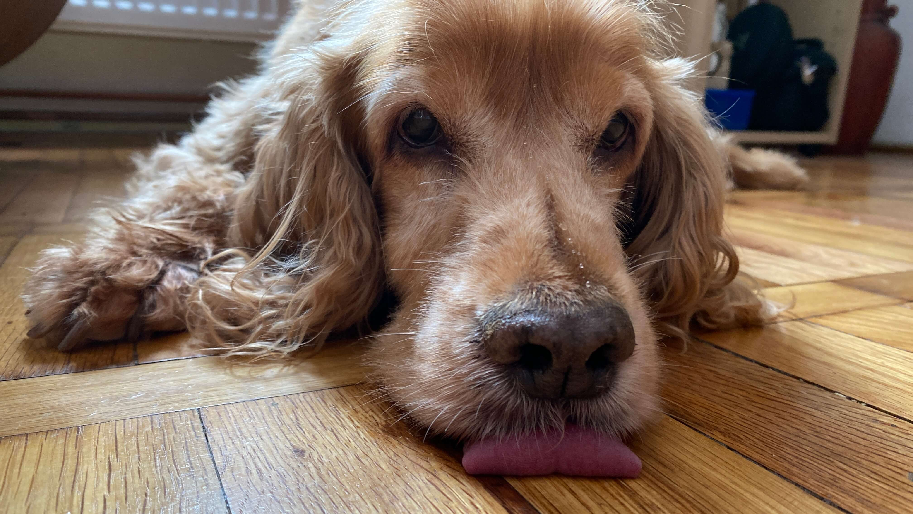

According to the WebAIM Million, an annual accessibility audit of the top 1,000,000 websites, missing alternative text for images is the second most common issue.
All images on the web must have an alt attribute. Screen readers need to be able to describe relevant images to users, and they can only do that if there's an alt text. Decorative images, on the other hand, are a hindrance to assistive tech users and should be ignored with alt="".
Images in Rails
Rails' image_tag helper makes it easy to add images to your website. <%%= image_tag "icon.png" %> will generate the following HTML: <img src="/assets/icon.png" />. To make this accessible, you need to add an alt attribute, like so:
How it works
To sighted users, the two images below might look identical. Screen reader users, on the other hand, will get a completely different experience.
Without an alt text
On its own, <%%= image_tag "bruno.jpg" %> generates an image without alt text. Without any information to go on, screen readers will describe it as an "unlabelled image".

With a descriptive alt text
However, if we change this to <%%= image_tag "bruno.jpg", alt: "A brown cocker spaniel lying on the floor, its tongue sticking out slightly" %>, the screen reader will announce the provided alt text. Make sure it's descriptive and no more than 150 characters long.
Accessible SVGs
SVGs are a bit different because they don't have an alt attribute. Instead, they need role="img", along with a title and, optionally, a description inside a desc tag. Decorative SVGs should be hidden with role="presentation" or aria-hidden="true".
James Martin's <%= link_to "inline_svg", "https://github.com/jamesmartin/inline_svg" %> gem allows you to use the inline_svg_tag helper to add a title and description. It also adds an ARIA label for additional support across different browsers and screen readers. Here's the correct usage for an image that needs text:
and for a hidden SVG:
If you don't want to add another gem, you can write your own helper. I used this SVG example from thoughtbot as a starting point to create a simple SVG helper. When no title is specified, the SVG gets aria-hidden="true" and the image is hidden from screen readers. If a title is specified, the role is updated to img. You can extend this to support a desc, aria-label, or any other attribute you need. Here's how it works:
Try it yourself
If you're on a Mac, you can test this yourself with VoiceOver. Press cmd + F5 to turn it on, then use control + option + right/left arrow to navigate to the desired image. When you're done you can switch VoiceOver off with cmd + F5.